The looks, full-size
A Settings window shows a look’s colors. A scene shows the look itself — the whole desk, dock and all. Three real captures:
Furniture & appearance
Most systems let you pick a wallpaper and call it personalization. Vizsla treats the whole look as furniture: a theme here is a complete outfit — the colors, a full set of icons drawn for that look, and its own shelf of wallpapers — chosen once, in one place, and then worn by every app, the desktop itself, and Firefox too. There are dozens of looks, and making another one is ordinary work, because a theme is only a small file of named colors.
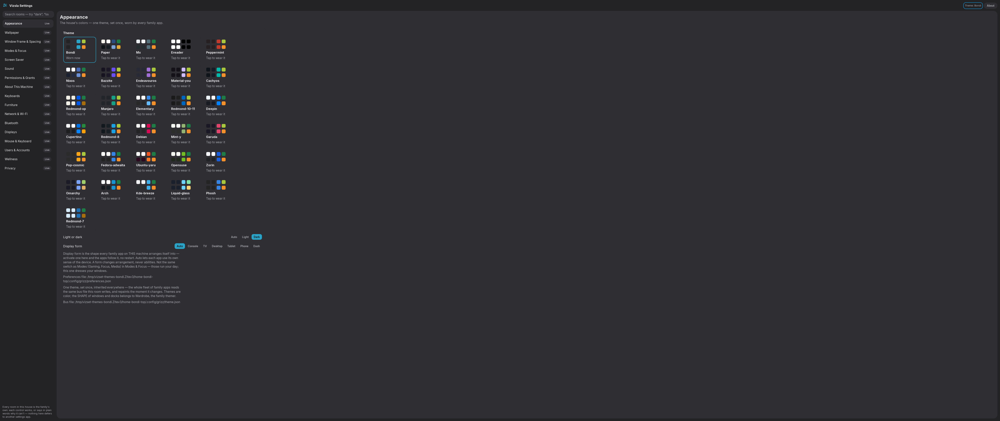
A Settings window shows a look’s colors. A scene shows the look itself — the whole desk, dock and all. Three real captures:
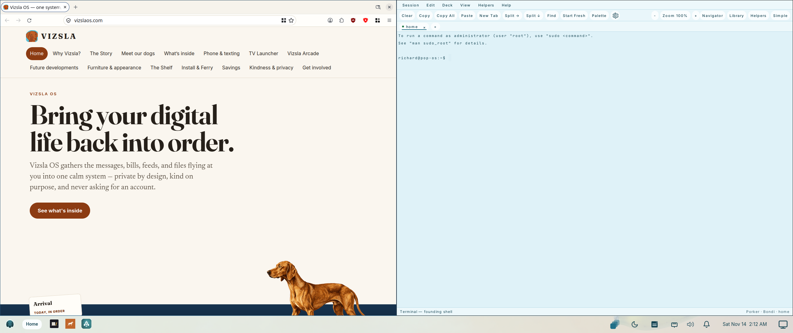
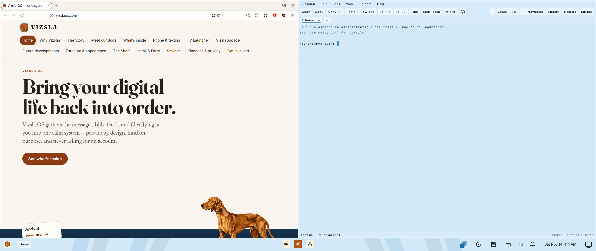
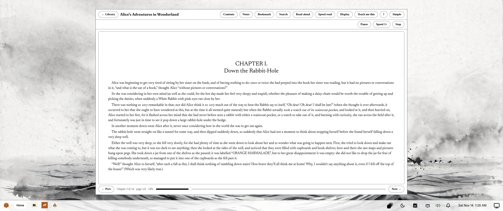
The picker above held thirty-one looks the day it was counted (October 2026), and the shelf has grown since — five more arrived in a single week that month alone. The house dress is Vizsla; around it stand Bondi (the blue one), Paper (the light one), Redmond 7, Dream Logic, Night Market, Chrome Pop, Gallery, Halftone, Liquid Glass, Sega, Noir, Peppermint, Typewriter — and more, each with a light and a dark face of its own. A name here is a contract: Paper is the light look and Bondi is the blue one in every app, and the family holds that line on purpose.
Nothing about choosing is fiddly. Each look previews in its real colors, the worn one is marked, and one tap wears it — every family app reads the same theme file the room writes, so the whole house repaints at once. The desktop shell and the window frames dress from the same shelf. There is no per-app preference page to hunt through, and no look that only half the system honors.
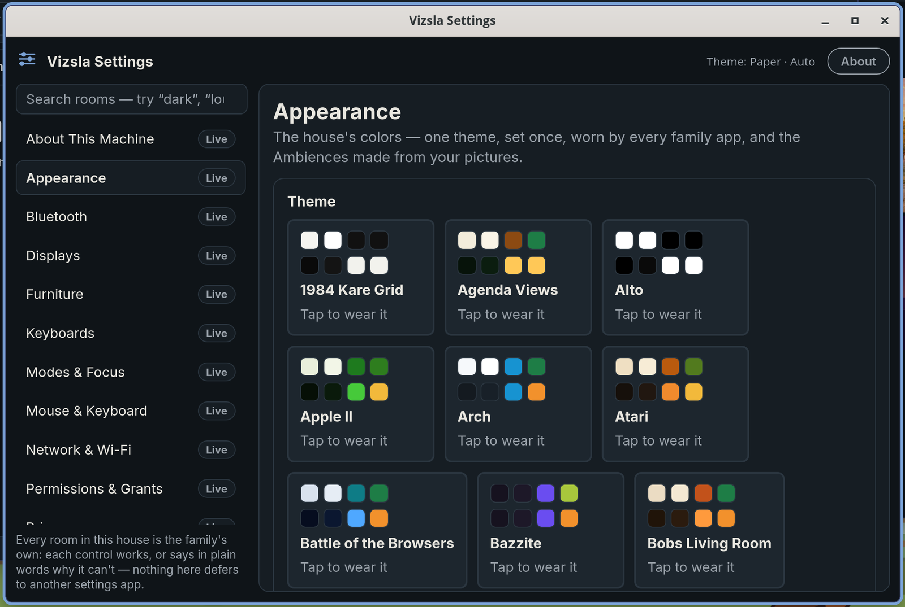
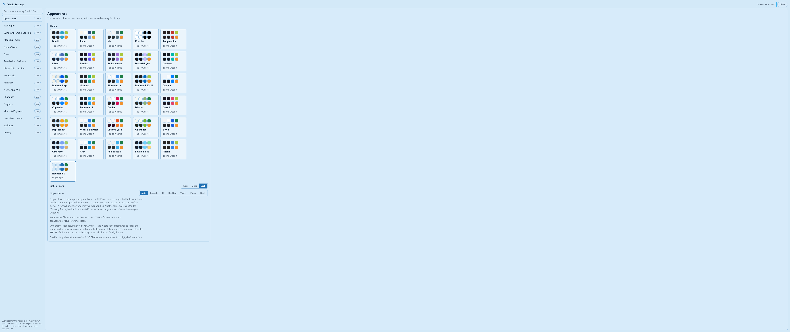
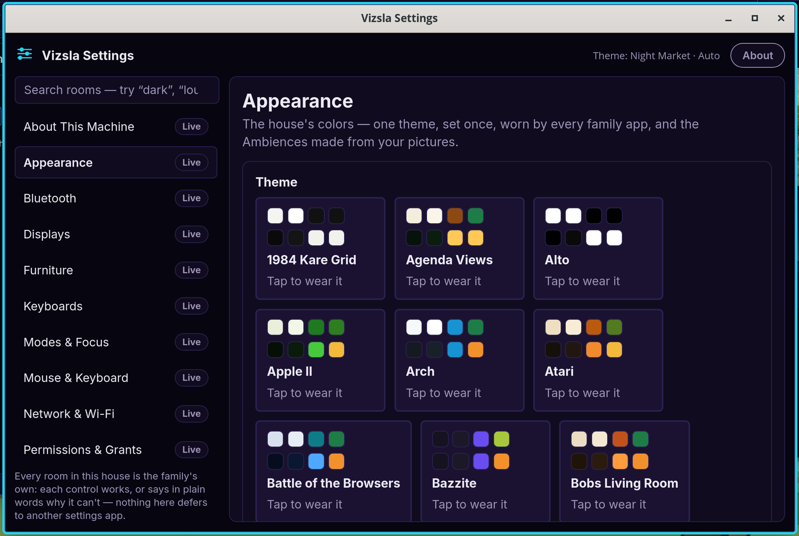
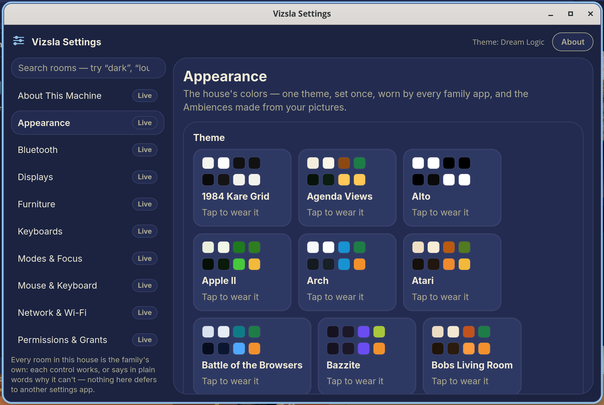
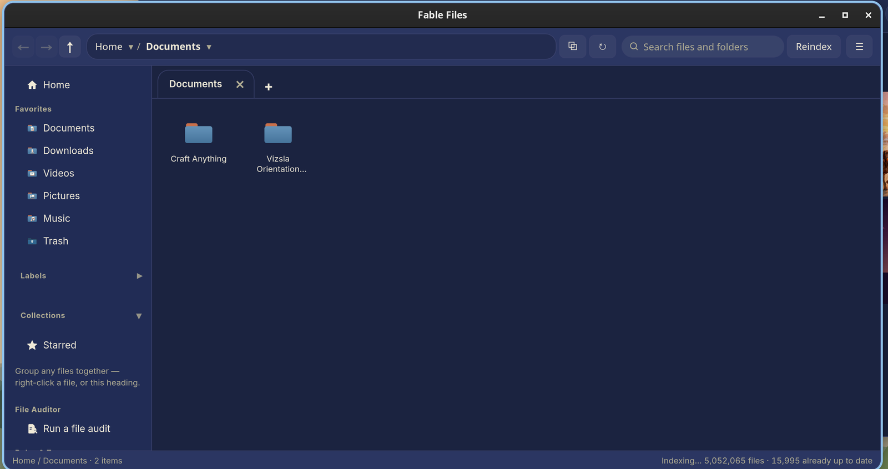
A theme that recolors the windows but leaves the icons dressed for somebody else’s look is half an outfit. So every Vizsla look carries a complete icon set of its own — at the last full census (November 2026) the machines in this house carried seventy icon packs, one per look, and when six new family icons were drawn that month, all seventy packs received them the same week, each in its own grade.
No look ships with holes. The full set — every app, every folder, every small glyph — exists for each theme, so switching looks never strands an icon in the previous outfit.
The family’s icons are conceptual glyphs — a shape that says the job, drawn once and kept consistent — and their colors come out of one house color book, so a set can be playful without clashing with itself.
The classics (Bondi, Paper, Noir) carry the glyphs as true vector drawings in their exact colors; the full-bleed looks — Sega, Steam, Typewriter, the Video Toaster Control Room — wear the same glyphs painted across a whole canvas, in that look’s own language. Same family, different clothes.
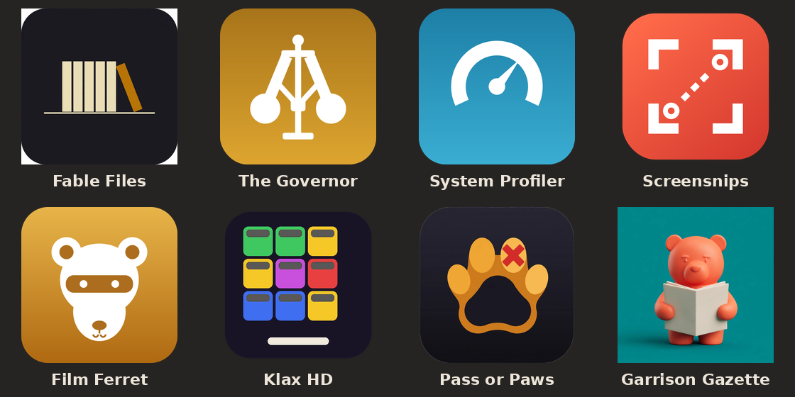
Here is the unglamorous secret: a theme is a small file of named colors — the background, the surfaces, the ink, the accent, a fixed set of named pieces, each face checked to be readable before the picker will offer it. Write the colors, put the file in the themes folder, and it appears on the shelf with its colors previewed, next to the house looks, ready to wear like any of them.
That is not a loophole; it is how the family’s own newest looks were made. The five that arrived in one week — Gallery, Night Market, Chrome Pop, Dream Logic, Halftone — were written as files under the house color book’s rules, which keep a new look from clashing with itself. And a look is more than colors: each theme arrives with its own shelf of wallpapers, so a new outfit changes the walls as well as the paint. There is no theme store and no theme “designer” app to buy. The file is the tool; the picker is the shop window.
The browser is not exempt. Two shipped pieces dress Firefox in the same look as everything else:
Vizsla Theme Sync — a small extension (version 1.0.0, signed through Mozilla’s own add-on signing and installed on every machine here) that hands Firefox’s chrome — the toolbars and the tab frame — the theme’s live colors. Flip the system theme and the browser follows without restarting. It paints the browser’s frame only; it never restyles a page.
The Wallpaper Mirror — your desktop wallpaper becomes Firefox’s own background, one image across the whole window, with the browser’s chrome frosted in your theme’s tint so it stays readable. A small background duty keeps it current: pick a new wallpaper, or let the desktop’s own art change, and the browser is wearing it too. Both pieces shipped in November 2026 and run on every machine in the house.
Put plainly: change your mind about how the house looks at breakfast, and by the time you open the browser it agrees with you.
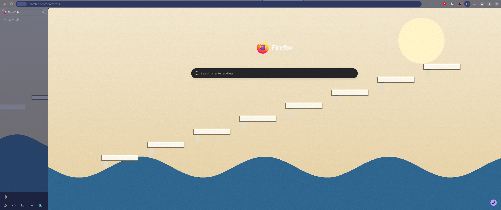
All of this is shipped and in daily use — the themes, the icon packs, and both Firefox pieces are seated on the machines that run Vizsla in this house. The counts on this page are dated where they stand (the picker census is October 2026; the icon census is November 2026), because the shelf keeps growing and a number without a date would be a small lie. The pictures are real captures from the machines in this house, cropped to the window so the words can be read, and labeled as what they are. The Firefox frame above was owed for a while — every earlier one carried the owner’s machine plate that his wallpaper wears — until he gave leave to switch the plate off for the picture; the frame on this page is that capture, and the plate went back on when it was done.